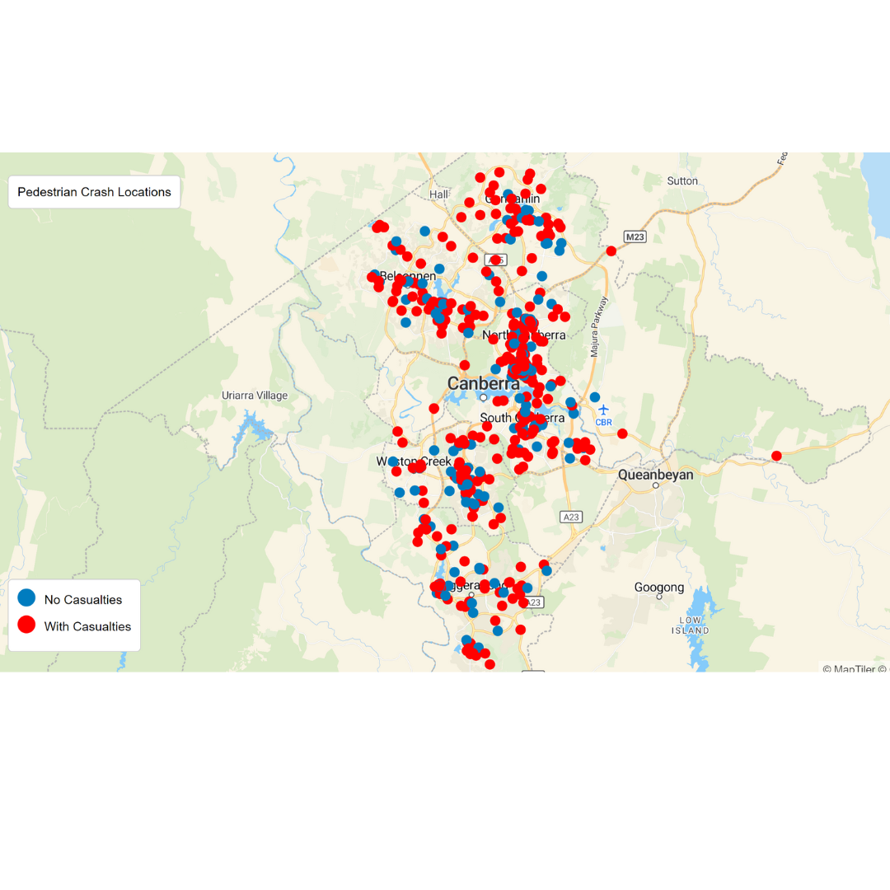
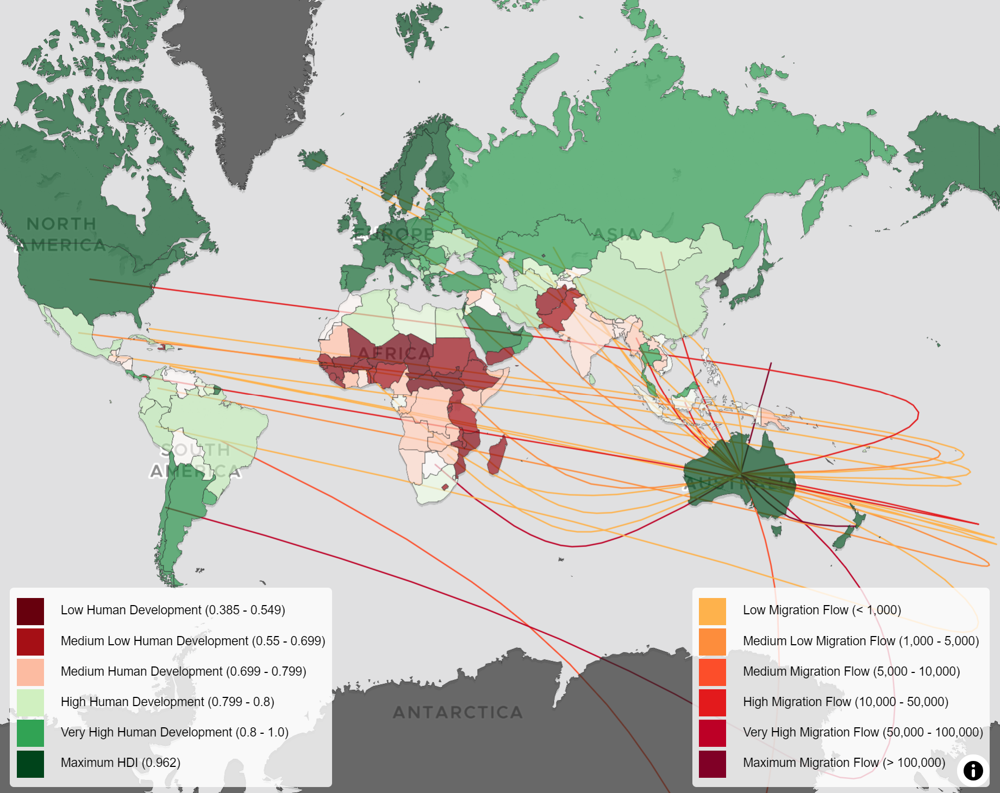

Online Mapping
I create dynamic and interactive online maps using HTML, CSS, JavaScript, MapLibre GL JS, bringing spatial data to life with geocoding and spatial analysis techniques. I am interested in data visualization to transform big data into intuitive and insightful maps.
My Portfolio

ACT Street Light and Speed Camera
I create dynamic and interactive online maps using HTML, CSS, JavaScript, MapLibre GL JS, bringing spatial data to life with geocoding and spatial analysis techniques. My expertise in data visualization allows me to transform big data into intuitive and insightful maps. Click here to view.

ACT Public Toilet and BBQ Locations 2024
Discover essential amenities across the ACT with the updated map for 2024. Easily locate public toilets and BBQ spots to enhance outdoor activities. This interactive map provides up-to-date information, helping find the nearest restrooms and ideal BBQ areas. Click here to view.

ACT Pedestrian Crash Locations
I created a Pedestrian Crash Map for the ACT using MapLibre GL JS and GeoJSON data, visualizing pedestrian crash incidents, and color-coding points to highlight casualties. It enhances public awareness and supports data-driven decision-making for improving pedestrian safety. Click here to view.

JSON to GeoJSON Tool
Easily convert JSON files to GeoJSON with this tool. Upload a JSON file, and it will be transformed into GeoJSON format for seamless use in mapping applications and spatial analysis. The JSON file must have "LONGITUDE" and "LATITUDE" columns. Click here to view.

Migration Flows and HDI: Australia
This HTML document sets up a web page with an interactive map using MapLibre GL JS. The map displays migration flows and Human Development Index (HDI) levels for various countries. It features two legends for HDI and migration flows, and uses color codes to represent different levels and volumes. The map is centered on Australia and includes smooth curved lines to show migration paths. JavaScript is used to dynamically load and display HDI data and migration flow data, with interactive features like tooltips and popups. Click here to view.
Migration Flows: JSON to GeoJSON
This HTML document provides a user interface to upload a JSON file, convert its data into GeoJSON format, and download the converted GeoJSON file. The JavaScript function reads the uploaded JSON, converts it into GeoJSON by mapping flow data into geographic features, and generates a downloadable link. The file must have "Country,Value,To_Longitude,To_Latitude,From_Longitude,From_Latitude". Click here to view.